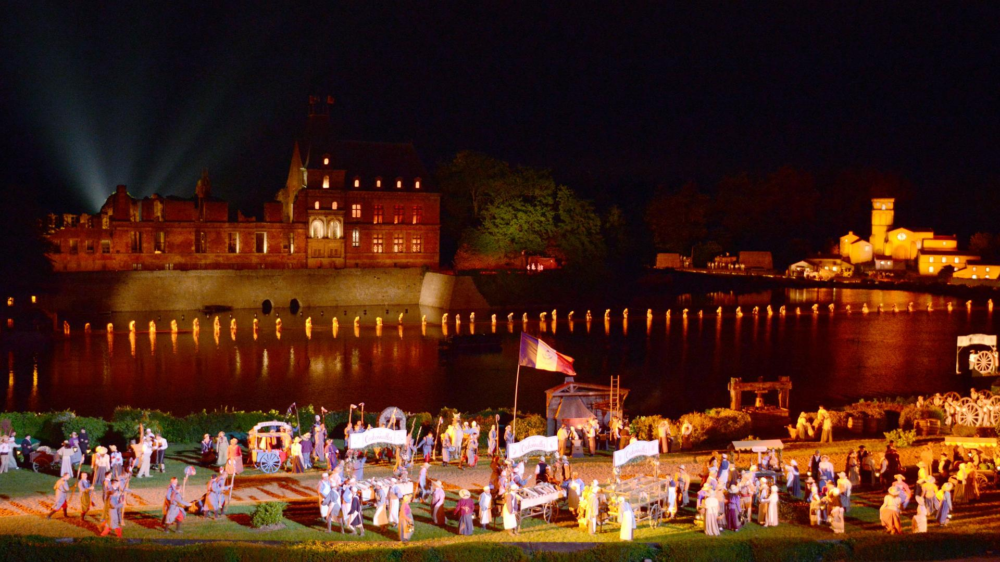
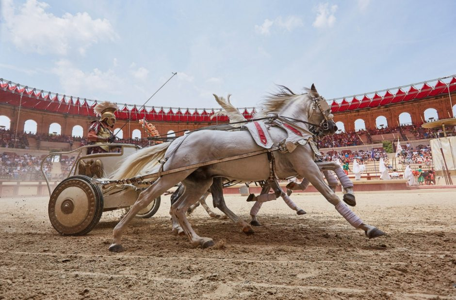
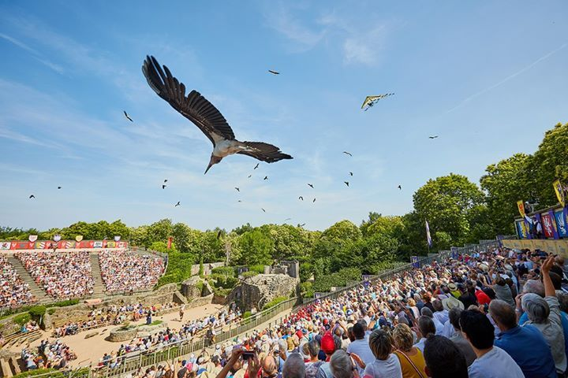

- 
- 
- 
Puy Du Fou се определя като увеселителен парк, но тук няма да намерите влакчета или шумни съоръжения, а капсула на времето, която ще ви върне стотици години назад.Използвайки зрелищни изпълнения на фона на изключително сложна декорация, пътуването ще ви отведе през историята на нашия свят, който оживява и пленява сърцата на милиони.
Какво да правите по време на посещението си там?
В парка ще откриете 20 грандиозни шоу спектакли, които ще ви пренесат стотици години назад от Ринската империя през Първата световна война, Стогодишната война и безброй други изненади.
Le Signe du Triomphe
Разположена във великолепен римски амфитеатър, тази пиеса изобразява великолепните игри на Древен Рим. Очаквайте състезания с колесници, гладиаторски битки и пътешествие през блясъка на Римската империя.
Лес Викинги
Пътуване до средновековно село, което внезапно е нападнато от викински кораб, който излиза от водата. Чрез огън, каскади и невероятно красиви ефекти шоуто разказва историята на нашествията на викингите в Европа и битките между тях и французите.
La Cinescenie
Смятана за любимата и най-популярна пиеса, която се провежда всеки ден и разказва за 700-те години история на района. С оригинален звук, ослепителни светлини и сложна хотеография, това е изживяване, което не може да бъде пропуснато.